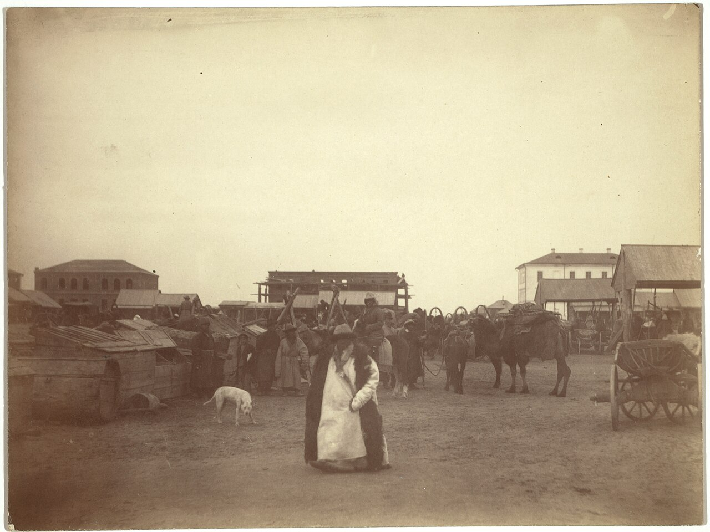

- Главная
- Об архиве
Об архиве
История, структура, читальный зал, контакты, отзывы и предложения.
История
Государственный архив Восточно-Казахстанской области с 1940 года хранит, комплектует и учитывает документы, имеющие историческое, научное и культурное значение.
Сегодня учреждение называется КГУ «Государственный архив» управления цифровизации и архивов Восточно-Казахстанской области (ГАВКО). В его состав входят Усть-Каменогорский филиал по личному составу и филиалы в Риддере, Алтае и Зайсане.
Деятельность и задачи
- хранение и учёт архивных документов;
- комплектование фондов;
- информирование через электронный каталог и открытые цифровые копии;
- выставки и образовательные проекты.
Структура и руководство
| Должность / подразделение | ФИО | Телефон |
|---|---|---|
| Директор | Жапаров Аскар Кенжебаевич | 8 (7232) 25-13-22 |
| Заместитель директора | Костина Елена Валерьевна | 8 (7232) 57-00-15 |
| Риддерский филиал, директор | Сарсембинова Шынар Жасулановна | 8 (72336) 42-264 |
| Филиал Алтай, директор | Сейлханов Сабырбек Какенович | 8 (72335) 31-260 |
| Зайсанский филиал, директор | Козлов Виктор Николаевич | 8 (72340) 21-476 |
Источник: e-arhiv.vko.gov.kz, 2026-11-09. Нормативно-правовая база и отчёты о деятельности публикуются здесь администратором (панель управления).
Фотогалерея



Характеристика фондов
Фонды государственного архива Восточно-Казахстанской области по состоянию на 01.01.2018г.
Партийные фонды государственного архива Восточно-Казахстанской области по состоянию на 01.01.2018г.
В Государственном архиве Восточно-Казахстанской области хранятся документы, отражающие период установления Советской власти в городе: Усть-Каменогорского уездного ревкома, уездного исполкома, уездного военкомата, частей особого назначения, уездных учреждений.
Особую ценность в архиве представляют фонды, документы которых отражают историю развития промышленности, так как Восточный Казахстан – это регион с развитой горнодобывающей, металлургической, машиностроительной отраслями. Это фонды Восточно-Казахстанского Совнархоза, Белогорского горно-обогатительного, Иртышского полиметаллического, Усть-Каменогорского свинцово-цинкового и титано-магниевого комбинатов; арматурного, машиностроительного, конденсаторного заводов, Усть-Каменогорского завода «Гидростальконструкция» и завода приборов. В нашей области также хорошо развиты местная, легкая и пищевая отрасли. В архиве хранятся документы Усть-Каменогорского комбината шелковых тканей, фабрики «Рассвет», Усть-Каменогорского мясокомбината, маслобойного завода, молочного комбината, Акционерного общества «Усть-Каменогорский хлебопродукт» и др. Восточный Казахстан обладает несметными богатствами недр. Фонды Восточно-Казахстанского геологического управления и его экспедиций содержат богатый материал о наличии полезных ископаемых, методах изыскательной работы, геологические характеристики Восточно-Казахстанской области. Другая особенность Рудного Алтая - богатые энергетические ресурсы. На хранении в архиве области имеются фонды районного управления «Алтайэнерго», Усть-Каменогорской ГЭС, управления строительства гидроэлектростанций на Иртыше «Иртышгэсстрой».
Фонды архива хранят документы Восточно-Казахстанского областного Совета народных депутатов и его исполкома, Аппаратов Акимов Восточно-Казахстанской области и города Усть-Каменогорска, Усть-Каменогорского городского Совета народных депутатов и его исполкома, Восточно-Казахстанского областного и городского маслихатов, документы райисполкомов и акимов районов, а также Восточно-Казахстанского обкома партии, Восточно-Казахстанского обкома комсомола, городских и районных комитетов партии, комсомола, учреждений образования, здравоохранения, культуры, связи, транспорта, жилищно-коммунального хозяйства, госимущества, налогообложения, экономики и финансов. История развития сельского хозяйства отражена в фондах областных и районных учреждений сельского хозяйства.
Восточный Казахстан - одна из немногих областей нашей страны, имеющих массивы промышленного леса. Поэтому большой интерес представляют фонды областного управления лесного хозяйства, лесхозов, лесозаготовительного деревообрабатывающего треста «Казлес».
О промышленном, жилищном, культурно-бытовом строительстве рассказывают документы строительных трестов, строительно-монтажных управлений, крупнейшими из которых являются «Алтайсвинецстрой» и «Иртышское строительное управление».
В фондах научных и проектно-конструкторских учреждений помимо управленческой документации содержится научно-техническая документация. Это фонды Всесоюзного научно-исследовательского института цветных металлов «ВНИИцветмет», государственного проектного института «Казгипроцветмет», Усть-Каменогорского филиала Казахского ордена Знак Почета государственного института по проектированию водохозяйственных сооружений «Казгипроводхоз», Завода «Керамика», ОАО «Иртышский химико-металлургический завод», Государственного проектного института по проектированию объектов жилищно-гражданского строительства "Востокгражданпроект", Государственного акционерного общества открытого типа "Белогорский горно-обогатительный комбинат" и др. Определенный интерес представляют коллекции документов по истории Восточного Казахстана, «Освоение целинных и залежных земель в Восточно-Казахстанской области», «Партизанское движение в Восточном Казахстане», коллекция документов по землеустройству хозяйств Восточно-Казахстанской области», по истории развития спорта в Восточно-Казахстанской области, «Движение за коммунистический труд», «Восточный Казахстан в годы Великой Отечественной войны в 1941-1945гг», воспоминаний ветеранов войны и труда, коллекция документов, выявленных в зарубежных архивах и научных учреждениях по истории региона и др.
Наш регион славен известными учеными, деятелями науки, культуры и искусства, писателями, общественными и политическими деятелями. Их документы представляют огромную историческую и научно-практическую значимость.
А госархиве области насчитывается на хранении 76 фондов личного происхождения.
Среди фондообразователей значатся: - заслуженный энергетик Казахской ССР, директор Лениногорского каскада ГЭС И. В. Бердус; - известный писатель, ученый, педагог А. М. Волков; - известный краевед, ученый, учредитель Семипалатинского подотдела Русского географического общества Б. Г. Герасимов; - политический ссыльный-народоволец, краевед, учредитель Семипалатинского подотдела Западно-Сибирского отдела Русского географического общества Н. Я. Коншин; - лауреат Ленинской премии, механик-изобретатель И.И. Котов; - писатель-журналист, переводчик произведений казахского акына Жамбыла - П.Н. Кузнецов; - известные садоводы, краеведы Панкратьевы; - доктор медицинских наук Н.С. Пахотина; - доктор филологических наук, профессор, член-корреспондент Академии наук РК, выдающийся языковед-тюрколог С.А. Аманжолов; - начальник областного управления культуры, участник Великой Отечественной войны У.Б. Малдыбаев; - ученый-самородок, автор Словаря русских личных имен Н.А. Петровский; - заслуженный учитель Казахской ССР К. К. Жаманбаев; - отличник архивного дела СССР, писатель, краевед, заслуженный работник культуры Казахской ССР С.Е. Черных; - доктор географических наук, профессор А.В. Егорина; - собиратель русских фамилий В.А. Рыбаков; - отличник народного просвещения П.С. Тихоновская; - ученые, краеведы братья Белослюдовы; - писатель-драматург, лауреат Государственной премии РК О. Бокеев; - Горохов М.В. – краевед, фотокорреспондент газет «Приртышский коммунар» и «Омская правда»; - Кагарманова М.М.- представитель татарской диаспоры в г. Усть-Каменогорск; - Мурыгин В.Е, Рахвалов Н.С. - участники борьбы за установление Советской власти в Восточном Казахстане; - Сакабаев К – журналист, писатель, член Союза писателей Казахстана; - Турлыбаев Е.К. – отличник народного просвещения Казахской ССР, журналист; - Увалиев Ю.К. – педагог, ученый, почетный профессор ВКГУ; - Алексеенко Н. В. – педагог, доктор исторических наук, профессор, почетный гражданин г. Усть-Каменогорска; - Яунродзинь Я. Я. - редактор газет Политотдела Украинской МТС "Ударник колхозных полей" и Кировского райкома партии и райисполкома "Прииртышский коммунар"; - кандидаты географических наук, педагоги Поповы; - Мусин М. Ш. – член Союза журналистов СССР, главный редактор литературно-художественного журнала «Восток», корреспондент международного радио «Свобода», участник Великой Отечественной войны; - Турғазы Нукайұлы – поэт, писатель, член Союза писателей Казахстана, первый заместитель редактора газеты «Дидар», краевед; - Габдулин Серік Габдуллаұлы – ақын, журналист, Қазақстан Жазушылар одағының мушесі, «Қазақ тілі» қоғамының тұнғыш басшысы, «Ақ Ертіс» республикалық әдеби журналының бас редакторы; - Г. Н. Пуссеп – директор общественного фонда Почетный граждан города Усть-Каменогорска «Мой город», член Союза журналистов Казахстана и ассоциации творческой интеллигенции Восточно-Казахстанской области; - Петровский Никандр Александрович - ученый-самородок, крупный специалист по ономастике, автор «Словаря русских личных имен»; - Яковлев Николай Никифорович - доктор исторических наук, профессор, организатор Государственной публичной исторической библиотеки в Москве, крупный специалист в области истории первой русской революции; - Ермолаев Кирилл Флавианович – кандидат геолого-минералогических наук, руководитель сектора аналитической геологии Алтайского отдела института геологических наук им. К. И. Сатпаева Академии наук Казахской ССР; - Аубакиров Алдияр Акылбекович (20.01.1949г.р. -) - поэт-любитель, коллекционер, начальник областного управления архивами Восточно-Казахстанской области; - Жангозин Ж.Ч. – директор, главный редактор Уланской районной газеты «Ұлан таңы» - «Уланские зори», член Союза Журналистов СССР, Союза Журналистов Республики Казахстан, отличник информационной отрасли, деятель культуры Республики Казахстан, Почетный гражданин Уланского района и многие другие.
Хранящиеся в госархиве области документы личных фондов являются неоценимым источником, часто используются при подготовке выставок, школьных уроков, лекций, творческих вечеров, создании документальных фильмов.
Государственный архив хранит уникальный в историческом плане пласт документов областных, городских, районных, волостных партийных комитетов Коммунистической партии Казахстана, Ленинского Коммунистического Союза молодежи Казахстана, раскрывающих политическую и социально- экономическую историю Казахской ССР под руководством КПСС.
В архиве хранятся не только документы на бумажной основе, но также и аудиовизуальные документы. Их насчитывается 7839 ед.хр. Это снимки окрестностей дореволюционного и современного Усть-Каменогорска; фотографии знаменитых людей; фотографии и видеофильмы знаменательных событий, происходивших в нашем городе и области; фонограммы; кинофильмы о развитии цветной металлургии: «О творческом содружестве ТМК, Реконструкция цеха №3»; «Бригадный подряд в подземных рудниках. Белоусовский рудник»; «50 лет Лениногорскому руднику»; «Ему имя – титан». Рассказ о работе плавильщиков на Усть-Каменогорском титано-магниевом комбинате»; Репортажи о работе Тишинского рудника открытых и закрытых работ Лениногорского полиметаллического комбината и т.д.
В Государственном архиве Восточно-Казахстанской области по состоянию на 01.01.2020 года хранится1 005 фондов – 610 492 ед.хр.
Шығыс Қазақстан облысының мемлекеттік архивінің қорлары 01.01.2018 жылдың жағдайына
Шығыс Қазақстан облысының мемлекеттік архивінің партиялық қорлары 01.01.2018 жылдың жағдайына
Шығыс Қазақстан облысының мемлекеттік архивінде, қалада Кеңес өкіметінің орнатылу кезеңін ашып көрсететін құжаттары сақталған: Өскемен уездік ревком, уездік атқару комитеті, уездік әскери комитеті, ерекше міндет жүктелген бөлімдері, уездік мекемелер.
Архивте, өнеркәсіптің даму тарихын көрсететін құжаттары бар қорлар ерекше құнды деп саналады, өйткені Шығыс Қазақстан – өркендеген тау кен қазу, металлургиялық, машина жасау салалары бар өңір. Бұл Шығыс Қазақстан Кеңес халық шаруашылық, Белогорский тау кен байыту, Ертіс полимтелл, Өскемен қорғасын-мырыш және титан-магний комбинаттары; арматуралық, машина жасау, конденсаторлық зауыттар, Өскемен «Гидростальконструкция» зауыты және құралдар зауыты қорлары. Біздің облысымызда сондай-ақ, жергілікті, жеңіл және азық-түлік салалары жақсы дамыған. Архивте, Өскемен жібек маталар комбинатының, «Рассвет» фабрикасының, Өскемен ет комбинатының, май зауытының, сүт комбинатының, «Өскемен нан өнімдері» акционерлік коғамының құжаттары және тағы басқа құжаттар сақталған. Шығыс Қазақстан жер қойнауының сарқылмас байлығына ие болған өңір. Шығыс Қазақстан геологиялық басқармасы және оның экспедицияларының қорында пайдалы қазбалар, ізденіс жұмыстардың әдістері, Шығыс Қазақстан облысының геологиялық сипаттамалар туралы бай материалдар бар. Рудный Алтайдың басқа бір ерекшелігі – бай энергетикалық ресурстар. Облыстың архивінің сақтауында «Алтайэнерго» аудандық басқарманың, Өскемен СЭС, Ертістегі «Иртышгэсстрой» суэлектр станциялардың құрылыс басқармасының қорлары сақталуда.
Архив қорлары Шығыс Қазақстан облыстық Халық депуттар кеңесі және оның атқару комитетінің, Шығыс Қазақстан облысы мен Өскемен қаласының әкімдер аппаратының, Өскемен қалалық Халық депуттар кеңесі және оның атқару комитетінің, Шығыс Қазақстан облыстық және қалалық маслихаттардың, аудандық атқару комитеттері мен аудан әкімдерінің құжаттары сақталған, сонымен қатар Шығыс Қазақстан обком партиясының, Шығыс Қазақстан обком комсомолының, қалалық және аудандық комитеттер партиясының, комсомолдың, білім, денсаулық сақтау, мәдениет, байланыс, көлік, тұрғын-коммуналдық шаруашылық, мемлекеттік мүлкі, салық салу, экономика және қаржы мекемелерінің құжаттары да сақталған. Ауыл шаруашылықтың даму тарихын облыстық және аудандық ауыл шаруашылық мекемелерінің қорлары бейнелейді.
Шығыс Қазақстан – еліміздің өнеркәсіптік орман сілемдері бар облыстарының бірі. Сондықтан облыстық орман шаруашылық басқармасының, орман шаруашылығының, ағаш дайындайтын және ағаш өңдейтін «Казлес» трестінің қорлары үлкен қызығушылық танытады.
Өнеркәсіптік, тұрғын, мәдени-тұрмыс құрылысы туралы құрылыс тресттер, құрылыс-монтаждық басқармалардың құжаттары, ең ірілері «Алтайсвинецстрой» және «Ертіс құрылыс басқармасы», бейнелейді.
Ғылыми және жобалық-құрылымдау мекемелерінің қорларында тек басқарма құжаттарынан басқа, ғылыми-техникалық құжаттары да бар. Бұл Бүкілодақтық ғылыми-зерттеу түсті металлдар институтының «ВНИИцветмет», «Казгипроцветмет» мемлекеттік жобалық институтының, «Казгипроводхоз» су шаруашылығы құрылысын жобалау бойынша мемлекеттік институты «Құрмет Белгісі» Қазақ Орденінің Өскемен филиалының, «Керамика» зауытының, «Ертіс химия-металлургиялық зауыты» ААҚ, «Востокгражданпроект» тұрғын-азаматтық құрылыс жобаларын жобалау бойынша мемлекеттік жобалау институтының, «Белогорский тау кен байыту комбинаты» ашық түрдегі мемлекеттік акционерлік қоғамының қорлары және тағы басқалар.
Шығыс Қазақстан тарихы бойынша құжаттар жинақтамалары, «Шығыс Қазақстан облысында тың және тыңайған жерлерді игеру», «Шығыс Қазақстанда партизан қозғалысы», Шығыс Қазақстан облысының шаруашылықтарды жерге орналастыру бойынша құжаттар жинағы, Шығыс Қазақстан облысында спорт даму тарихы бойынша жинақтар, «Коммунисттік еңбек үшін қозғалыс», «Шығыс Қазақстан Ұлы Отан соғыс жылдарында 1941-1945жж.», соғыс және еңбек ардагерлердің еске алулары, өңір тарихы бойынша шетел архивтерінде және ғылыми мекемелерінде айқындалған құжаттар жинағы белгілі бір қызығушылық танытады және тағы басқалар.
Біздің өңір белгілі ғалымдармен, ғылым, мәдениет және өнер қайраткерелерімен, жазушыларымен, қоғамдық және саяси қайраткерелерімен танымал. Олардың құжаттары үлкен бір тарихи және ғылыми-тәжірибелік маңыздылық құрайды.
Облыстың архивінде 70-тен аса жеке текті қорлар сақтауда.
Қор құраушылардың арасында:- Бердус И.В. – Қазақ КСР еңбегі сіңңірген энергетигі, Лениногорск СЭС каскадының директоры; - Волков А.М. – белгілі жазушы, ғалым, педагог; - Герасимов Б.Г. – белгілі өлкетанушы, ғалым, Орыс географиялық қоғамының Семей бөлімшесінің құрылтайшысы; - Коншин Н.Я. – саяси жер аударылған-народоволец, өлкетанушы, Орыс географиялық қоғамы Батыс-Сібір бөлімінің Семей бөлімшесінің құрылтайшысы; - Котов И.И. – Ленин сый лауреаты, механик-өнертапқыш; - Кузнецов П.Н. – жазушы-журналист, қазақ ақыны Жамбыл шығармаларының аудармашысы; - Панкратьевтер – белгілі бақшашылар, өлкетанушылар; - Пахотина Н.С. – медицина ғылымының докторы; - Аманжолов С.А. – филология ғылымының докторы, профессор, ҚР Ғылым академиясының корреспондент мүшесі, әйгілі тілші-тюрколог; - Малдыбаев У.Б. – облыстық мәдениет басқармасының басшысы, Ұлы Отан соғысының қатысушысы; - Петровский Н.А. – дарынды ғалым, Орыс жеке есімдер сөздігінің авторы; - Жаманбаев К.К. – Қазақ КСР еңбегі сіңірген оқытушысы; - Черных С.Е. – КСРО архив ісінің үздігі, жазушы, өлкетанушы, Қазақ КСР еңбегі сіңірген мәдениет қызметкері; - Егорина А.В. – география ғылымының докторы, профессор; - Рыбаков В.А. – орыс тектерін жинаушы; - Тихоновская П.С. – халық ағартудың үздігі; - Белослюдовтар – ғалымдар, өлкетанушылар; - Бокей О. – жазушы-драматург, ҚР Мемлекеттік сый лауреаты; - Горохов М.В. – өлкетанушы, «Приртышский коммунар» және «Омская правда» газеттерінің фотокорреспонденті; - Кагарманова М.М. – Өскемен қ. татар диаспорасының өкілі; - Мурыгин В.Е., Рахвалов Н.С. – Шығыс Қазақстанда Кеңес өкіметін орнатуда күрестің қатысушысы; - Сакабаев К. – журналист, жазушы, Қазақстан жазушылар одағының мүшесі; - Турлыбаев Е.К. – Қазақ КСР халық ағартудың үздігі, журналист; - Увалиев Ю.К. – педагог, ғалым, ШҚМУ Құрметті профессоры; - Алексеенко Н. В. – педагог, тарихы ғылымының докторы, профессор, Өскемен қ. Құрметті азаматы; - Яунродзинь Я. Я. – «Ударник колхозных полей» Украина МТС Саяси бөлімі және Киров партияның аудандық комитеті мен «Прииртышский коммунар» аудандық атқару комитеті газеттерінің редакторы; - Поповтар – география ғылымының кандидаттары, педагогтар; - Мусин М. Ш. – КСРО Журналисттер одағының мүшесі, «Восток» әдеби-көркем журналының бас редакторы, «Свобода» халықаралық радио корреспонденті, Ұлы Отан соғысының қатысушысы; - Тұрғазы Нукайұлы – ақын, жазушы, Қазақстан Жазушылар одағының мүшесі, «Дидар» газетінің редакторының бірінші орынбасары, өлкетанушы; - Ғабдулин Серік Габдуллаұлы – ақын, журналист, Қазақстан Жазушылар одағының мушесі, «Қазақ тілі» қоғамының тұнғыш басшысы, «Ақ Ертіс» республикалық әдеби журналының бас редакторы; - Пуссеп Г. Н. – «Мой город» қоғамдық қорының директоры, Өскемен қаласының Құрметті азаматы, Қазақстан Жазушылар одағының және Шығыс Қазақстан облысының көркемөнер зиялылар қауымдастығының мүшесі; - Жангозин Ж. Ч. – Ұлан аудандық «Ұлан таңы» - «Уланские зори» газеттерінің директоры, бас редакторы, КСРО Журналисттер одағының, Қазақстан Республикасы Журналисттер одағының мүшесі, ақпараттық саласының үздігі, Қазақстан Республикасының мәдениет қайраткері, Ұлан ауданының Құрметті азаматы және тағы басқалар.
Облыстың мемлекеттік архивінде сақтаудағы жеке қорларының құжаттары көрнекті қайнар көзі болып, көрмелер дайындағанда, мектеп сабақтарын, дәрістерді, шығармашылық кештерді өткізгенде, деректі фильм жасағанда пайдаланылады.
Архивте қағаз негізіндегі құжаттар ғана емес, сонымен қатар аудиовизуалды құжаттар да сақталған. Олардың саны 7839 с.б. жетеді. Олар, Өскеменнің революцияға дейінгі және қазіргі кезеңгі төңіректерінің сүреттері, атақты тұлғалардың фотосуреттері, қаламыз бен облысымызда болған атаулы оқиғалардың фотосуреттері мен бейнефильмдері, фонограммалар, кинофильмдер және тағы басқалар.
Шығыс Қазақстан облысының мемлекеттік архивінде 01.01.2020 жылдың жағдайына 1 005 қор – 610 492 с.б. сақтауда.
Источник: e-arhiv.vko.gov.kz, снято 2026-11-09.
Читальный зал и правила доступа
Усть-Каменогорск, ул. Головкова, 26/1
Пн-пт 10:00-17:00. Работа с подлинниками по документам, открытым для ознакомления.
Усть-Каменогорск, ул. Крылова, 39
Пн-пт 10:00-17:00. Второй адрес читального зала. Телефон: 8 (7232) 25-13-47.
Сайт ничего не оформляет и не принимает: он показывает каталог, открытые цифровые копии и контакты. Документы с ограничением доступа отображаются карточкой с описанием и условиями (законодательство РК о персональных данных).
Новости и события
- День пожилого человека
- «День открытых дверей»
- «Архив и будущее поколение»
- Экспозиционно-тематическая выставка
- Фестиваль «Золотой Тургусун»
- «QAZAQSHA QUIZ» «Қазақшаңыз қалай, мемлекеттік қызметші?»
Источник списка: e-arhiv.vko.gov.kz. Фильтры по категориям и поиск по новостям настраиваются в админке.
Справка и частые вопросы
Что такое фонд, опись, дело?
Как искать в каталоге?
Что означают статусы доступа?
Можно ли заказать справку или копию через сайт?
Контакты
| Подразделение | Адрес | Телефон | |
|---|---|---|---|
| ГАВКО | 070004, г. Усть-Каменогорск, ул. Головкова, 26/1 | 8 (7232) 25-59-76 | arhiv-ukg@yandex.kz |
| Усть-Каменогорский филиал по личному составу | 070003, ул. Потанина, 12/2 | 8 (7232) 76-65-60 | не указан |
| Риддерский филиал | 071300, ул. Ч. Валиханова, 44 | 8 (72336) 42-264 | priem.arhiv-ridder44@yandex.kz |
| Филиал Алтай | 070804, ул. М. Горького, 33 | 8 (72335) 31-260 | arhiv.altai@yandex.kz |
| Зайсанский филиал | 070700, ул. Жангельдина, 52 | 8 (72340) 21-476 | qosarhivzaysan_1@mail.ru |
Социальные сети
Официальные аккаунты (Instagram, Telegram, YouTube): список и ссылки предоставит заказчик; сейчас на действующем сайте есть только кнопки «Поделиться».
Отзывы и предложения
Правовая информация
Политика конфиденциальности: сайт не собирает персональные данные посетителей; аналитика ведётся в обезличенном виде. Авторские права: материалы сайта доступны по свободной лицензии, если не указано иное; исторические иллюстрации: Wikimedia Commons, общественное достояние. Заявление о доступности: целевой ориентир WCAG 2.2 AA.